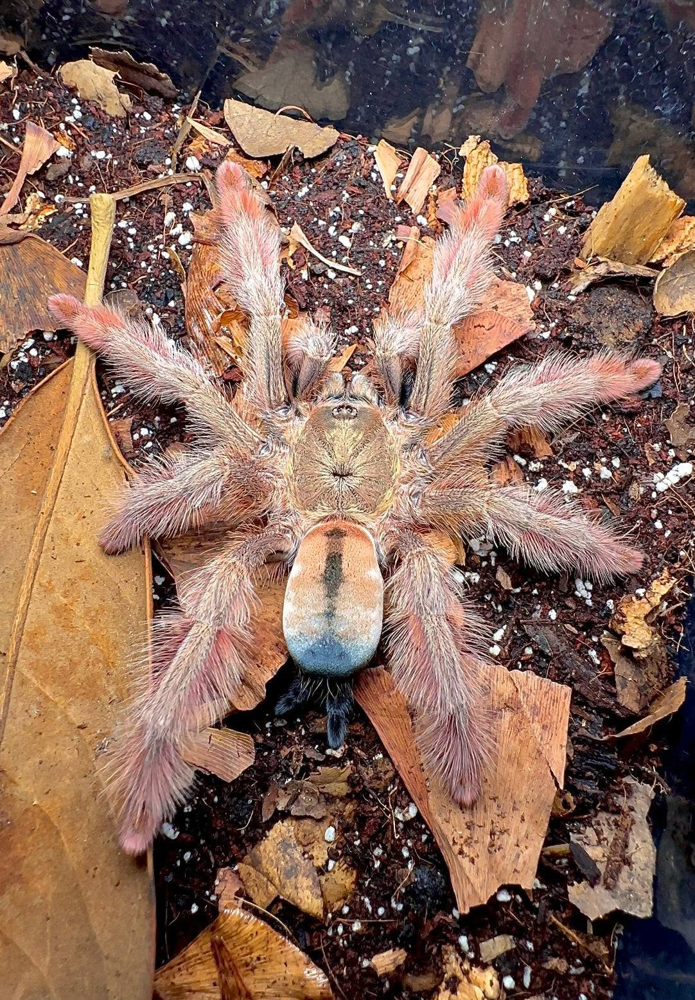
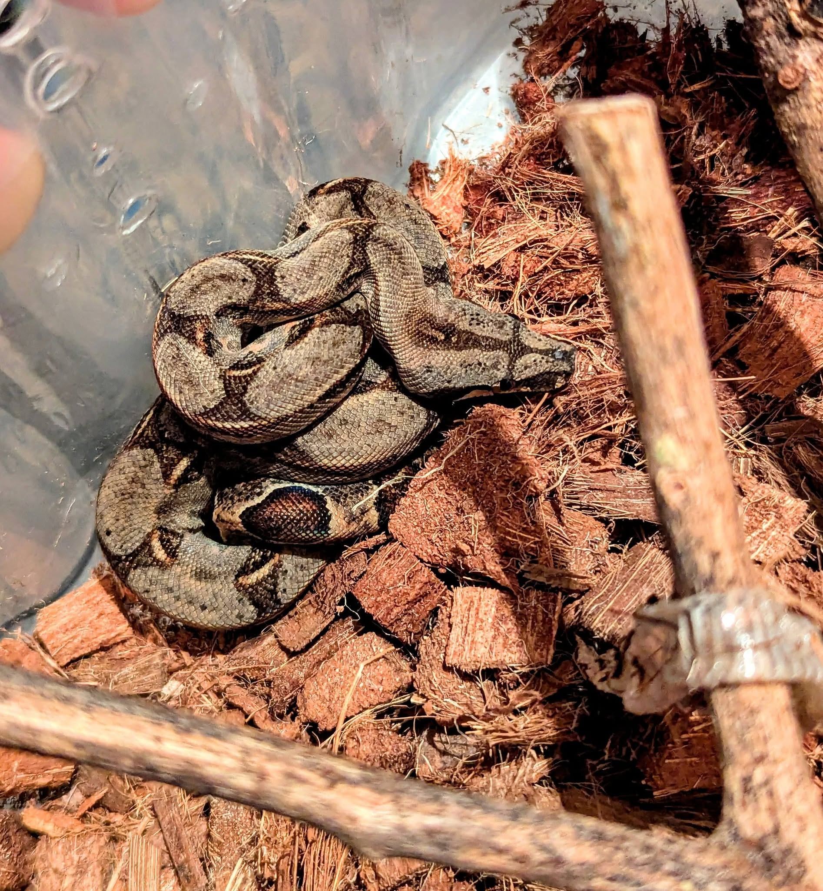

Max

Max es un perro cariñoso que busca un hogar. Tiene 3 años y le encanta jugar al aire libre.
Adoptar a MaxEn Wild Project, creemos en la importancia de la adopción responsable de animales. Nuestro programa de adopciones está diseñado para conectar a los amantes de los animales con aquellos que buscan un hogar amoroso. Cada animal que llega a nuestro refugio es evaluado cuidadosamente para garantizar su bienestar y encontrar el hogar adecuado para ellos.
El Proyecto Wild está dedicado a explorar las maravillas de la naturaleza y la conservación de la vida silvestre. Nuestra misión es concienciar sobre la importancia de preservar nuestros hábitats naturales y proteger las especies en peligro de extinción ademas de la adopcion responsable y el apoyo a la reubicacion de especies.
Max es un perro cariñoso que busca un hogar. Tiene 3 años y le encanta jugar al aire libre.
Adoptar a Max
Kitty es una gata dulce que busca un hogar. Tiene 2 años y le encanta acurrucarse en el sofá.
Adoptar a Kitty
Rex es un gecko curioso que busca un hogar. Tiene 1 año y le encanta explorar su entorno.
Adoptar a Rex
Crawl es un gecko curioso que busca un hogar. Tiene 2 años y le encanta explorar su entorno.
Adoptar a Crawl
Sedosa es una araña curiosa que busca un hogar. Tiene 8 meses y le encanta explorar su entorno.
Adoptar a Sedosa
Snake es una serpiente curiosa que busca un hogar. Tiene 8 meses y le encanta explorar su entorno.
Adoptar a Snake